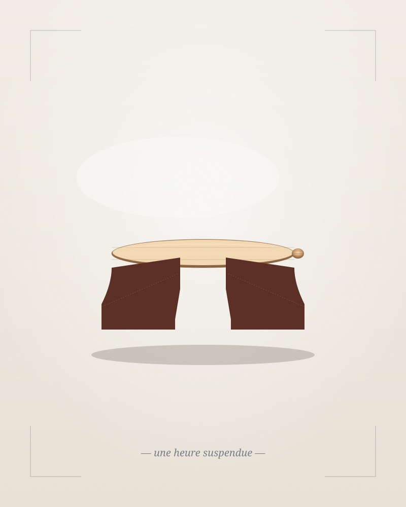

Manufakturwerk
Vom Hemmungsrad bis zur Brücke — jedes mechanische Teil entsteht in unserer eigenen Werkstatt. Keine Outsourcing-Bauteile, keine Kompromisse.
Im Jahr 1894 öffnete Augustin Reymond in einem Hinterhof der Genfer Altstadt seine erste Werkstatt — kaum mehr als ein Tisch am Fenster, eine Lupe, drei Werkzeuge.
Vier Generationen später folgen wir derselben Disziplin. Jede Uhr, die unsere Maison verlässt, durchläuft sechsundachtzig Hände — Konstrukteurinnen, Drehern, Polisseuren, Régleurs — bevor sie unter unserem Siegel die Werkstatt verlässt.
Wir bauen wenige Uhren. Wir bauen sie für jene, die Wert nicht am Preis, sondern an der Geste erkennen.

Vom Hemmungsrad bis zur Brücke — jedes mechanische Teil entsteht in unserer eigenen Werkstatt. Keine Outsourcing-Bauteile, keine Kompromisse.
Wir nummerieren jede Referenz. Manche Modelle erscheinen in 28 Exemplaren, andere in 199. Niemals mehr.
Eine Zeigerwerke ist eine Verpflichtung — auch unsererseits. Wir warten, restaurieren und überholen jedes Stück, das aus unserer Hand kommt, ohne Ablauffrist.
Unsere Kaliber tragen das Poinçon de Genève — jenen unbestechlichen Stempel, der seit 1886 bestätigt, dass keine Abkürzung den Weg verkürzt hat.

€ 14.800
Klassisches Drei-Zeiger-Modell mit kleiner Sekunde. Manuelles Kaliber ZW-204, 65 Stunden Gangreserve.

€ 22.500
Sportlicher Schaltrad-Chronograph mit Tachymeterlünette. 42 mm. Kobaltblaues Zifferblatt mit feinster Guillochage.

€ 18.900
Schwarzes Lackzifferblatt, Mondphase, Champagner-Goldzeiger. 39 mm Platingehäuse, transparenter Boden.

Wenn das Pendelchen schlägt — viermal in einer Sekunde, einundzwanzigtausendsechshundertmal in einer Stunde, eine halbe Milliarde Mal in einem Jahr — dann ist das nicht Mechanik. Das ist ein Atem.
„Wir bauen keine Uhren, die schöner laufen. Wir bauen Uhren, die schöner stillstehen — wenn man sie ablegt, drehen sie ihre letzte Runde mit derselben Würde wie die erste."
Sechzig Sekunden. Sechzig Minuten. Zwölf Stunden. Diese drei Zahlen sind unser Alphabet, und doch finden wir in ihnen seit einhundertdreißig Jahren neue Sätze.
Mehr über die Manufaktur
Ein Termin, eine Tasse Tee, drei Uhrwerke unter einer Genfer Lampe. Wir nehmen uns Zeit — die einzige Währung, mit der wir wirklich umgehen können.